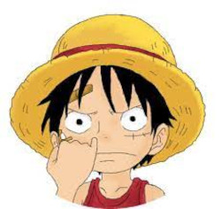
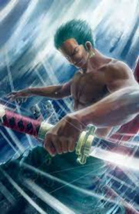

1° É possível usar imagens baixando para o computador e pegando das pastar
2° É possível também pegar imagens que estão em sub-pastas
3° É possível pegar a URL da imagem também (estar sempre atentar caso queira utilizar essa forma pois se o site em que a imagem estar hospedada cair, a imagem vai junto)

FIM!